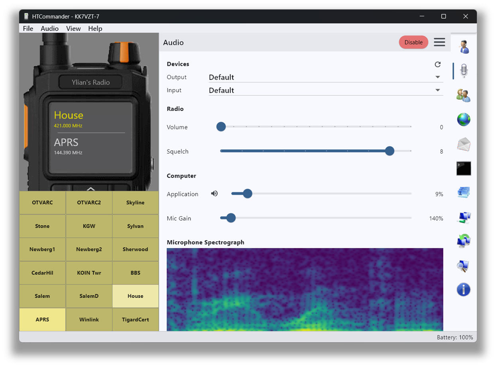

दोतरफ़ा ऑडियो, कोई केबल नहीं
HTCommander दोतरफ़ा Bluetooth ऑडियो का समर्थन करता है। आप अपने कंप्यूटर के ऑडियो डिवाइस और/या हेडसेट का उपयोग करके प्रसारित और प्राप्त कर सकते हैं, और रेडियो ऑडियो को WAV फ़ाइल में रिकॉर्ड कर सकते हैं — सब कुछ बिना अतिरिक्त केबलिंग के।
अपनी पूरी ऑडियो शृंखला को ठीक करें
एक ऑडियो विज़ुअलाइज़ेशन के साथ-साथ ढेर सारे डिवाइस-चयन और वॉल्यूम नियंत्रण आपको सब कुछ बिलकुल सही सुनाई देने के लिए ट्यून करने देते हैं: इनपुट और आउटपुट डिवाइस चुनें और अपने स्तर सेट करें। प्रसारित करने के लिए, बस ट्रांसमिट बटन दबाकर रखें।
Windows, macOS, Linux और Android पर उपलब्ध।